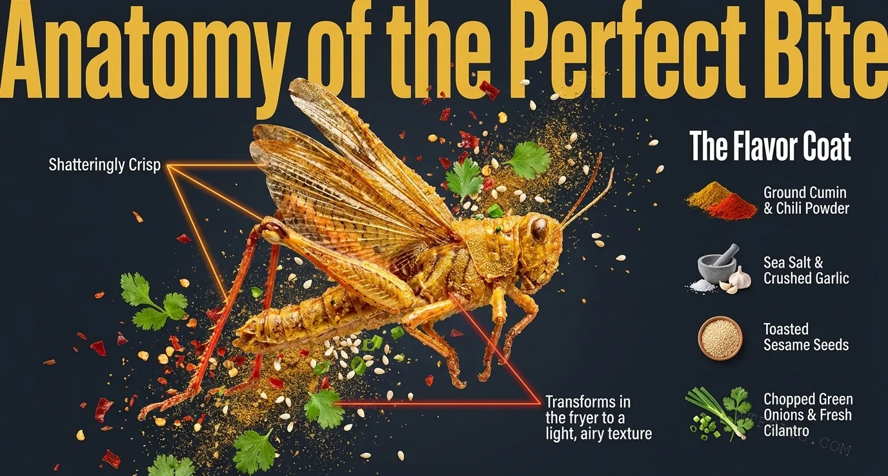

It's just a dare or stunt food.
The internet loves to frame edible insects as challenges. In rural Shandong, children grow up eating fried grasshoppers as a normal summer snack — no dares required.
No. 012 / Misunderstood Chinese Food
In the night markets of Shandong, a plate of golden-brown fried grasshoppers disappears in minutes. Collected at peak summer abundance, seasoned with cumin and chili, and flash-fried until shatteringly crisp — this is not novelty food. This is a rural tradition older than most restaurants, and a texture that no potato chip has ever matched.

This is not fear-factor food or a tourist stunt. Families in Shandong have eaten fried grasshoppers for generations as a seasonal tradition.
Properly fried, the texture is shatteringly crisp and the flavor is nutty, savory, and smoky — the seasoning does the talking, the crunch does the convincing.
The harvest window is strictly summer to early autumn. When the season ends, the stalls close. Timing is everything.
What Is It?
Fried Grasshoppers, known in China as Youzha Mazha (油炸蚂蚱), are a traditional seasonal snack enjoyed across northern China — particularly in Shandong, Hebei, Henan, and Inner Mongolia. Fresh grasshoppers are collected during the summer months, thoroughly cleaned, seasoned, and deep-fried until they turn a beautiful golden-brown with an evenly crisp surface.
Although many international visitors may find the idea unusual, fried grasshoppers are part of a long tradition of edible insects in Chinese cuisine. They are appreciated for their crispy texture, savory flavor, and connection to seasonal harvesting. Today, they can be found at street food markets, barbecue stalls, food festivals, and specialty restaurants throughout northern China.
The Anatomy
A properly fried grasshopper delivers a textural experience unlike any other snack. The legs and wings become crunchy and delicate, while the body develops a light, airy texture that shatters cleanly between the teeth. The flavor coat — ground cumin, chili powder, sea salt, crushed garlic, toasted sesame seeds, and fresh cilantro — transforms the mild, nutty base into something unmistakably Chinese.

Myth vs Fact
The internet loves to frame edible insects as challenges. In rural Shandong, children grow up eating fried grasshoppers as a normal summer snack — no dares required.
Grasshoppers are a nutrient-dense food source. They contain significant protein, healthy fats, and minerals — a sustainable alternative to conventional meat.
First-timers are often surprised. The flavor is mild, nutty, and savory — the seasoning provides most of the taste, while the insect itself offers an addictive crunch.
Any longer and the delicate texture turns tough. Any shorter and the inside stays soft. The 2–3 minute fry is non-negotiable for the perfect crunch.

Visual Story
Follow the fried grasshopper from field to fryer: the summer harvest, the five-step preparation, the night market tasting board, and the global crunch that connects China to Mexico, Thailand, and beyond.
Follow the crunchDeep Dive
The harvesting window, the cleaning ritual, the seasoning science, and why 2–3 minutes in hot oil is the only acceptable cook time.
Read the articleGuide
A tidy table of contents for the overview, the crunch, the craft, and what comes next.
Browse chaptersHow to Eat It
Fried grasshoppers are typically served hot and eaten whole. Pick one up by hand or with chopsticks while the exoskeleton is still crisp — the crunch is at its peak in the first few minutes after frying.
The night market standard: cold beer cuts through the rich oil and spice, balancing the savory crunch with refreshing contrast. Sip, bite, repeat.
Served alongside barbecue skewers, roasted peanuts, and pickled vegetables. The social context matters — this is summer tradition food, meant to be shared with friends at outdoor markets and evening stalls.